Here's the fifth in a series on the best sections of North America in which to pursue a rural lifestyle.
From Yellowstone-where the fire down below makes a fanciful surface display-mountain ranges fan out to frame the surveyor-perfect 90° corner of northwest Wyoming. To the east, the Beartooth and Absaroka; to the south, the Teton. Between these landmarks, in an area about the size of New Hampshire and Vermont combined, lies the largest intact ecological community in the lower 48, the Greater Yellowstone Ecosystem.
It may also be the most spectacular. Grizzly and black bear, bison, moose, elk, mule deer, bighorn sheep, antelope, bald and golden eagles-they're all common. An avalanche of adjectives and a continent of Kodachrome have been expended trying to capture the sights from the valley of Jackson Hole: the Tetons (so aptly anatomically named by lonesome French explorers for their resemblance to upright breasts) against the sunset, the Gros Ventres (again French, for large belly) in the dawn, the headwaters of the Snake River winding southwest, deep blue Jackson Lake at your feet.
A (mostly) still-pristine wonderland, northwest Wyoming is on everyone's vacation wish list. Four million people pass through Yellowstone and Teton National Parks every summer to marvel at Mother Nature's displays. A smaller but still significant number come in winter to play on the slopes of America's biggest ski area, to cross-country ski or snowshoe in the flats among moose and elk and to marvel at such endangered indigenous species as the cowboy.
Without a doubt, anyone who can manage ought to see northwest Wyoming in summer. And dedicated downhill skiers haven't lived fully until they've tried out the legendary powder on Jackson Hole Resort's 4,139 feet of vertical drop. Being a vacation paradise does not, however, perfectly qualify a region as a place to make a home in the country. For all its allure, is northwest Wyoming a place you would (or could) call home?
Wyoming's boundaries enclose some of the least-tamed acres in North America. At that, the acre really isn't an appropriate unit in a place with so much elbowroom. The state's half-million citizens are spread out over nearly 100,000 square miles, giving it a national rank of 50th in population density. That's right, fewer people per square mile than Alaska. Casper and Cheyenne (the capital) are the only cities (or so they're called by Wyomingites) that can claim more than 40,000 people. My gosh, Casper and Cheyenne are so urbane that each has a mall. Attention, shoppers: It's one heck of a long way from either mall to Jackson Hole (300 and 430 miles, respectively).
Fewer than 20,000 souls inhabit the portions of Fremont, Sublette and Teton counties that are the focus of this article, making the Greater Yellowstone Ecosystem one of the least-tamed sections of the least-tamed state. If you really want to get away from it all, there's no better place.
Terrain varies from rugged mountains to high prairie, but the majority of the available land is in mountain valleys. Much of the Greater Yellowstone is held by the Forest Service, the National Park Service and the Bureau of Land Management. Teton County, for instance, is 97% publicly owned.
One effect of the large public holding is that, despite the low population, private property is in high enough demand to keep prices up. Expect to pay premium-resort rates: perhaps as low as a few thousand dollars per acre in remote areas of Sublette County or over toward Dubois, but $10,000 per acre and up as you near the national parks. In Teton County, it's easy (if unpleasant) to locate a $50,000 lot, and asking prices at posh, upper-crust developments go as high as $150,000 for a house-size parcel.
Fortunately, water isn't usually a problem.
Ground water fed by mountain snows typically can be found at 50 to 250 feet, and springs may even preclude the need for drilling. However, with less than 20 inches of precipitation per year (mostly snow), irrigation is widely practiced, even on the grasslands of the National Elk Refuge. The roughly 90-day growing season allows gardening of hearty varieties, but the soils are generally marginal, having been stripped by glaciation. The best soils in Jackson Hole are at the western side of the valley, where loess carried on the wind from Idaho is deposited.
Though mostly rural and wild, northwest Wyoming has plenty of sophistication: Nearly 5,000 of the 20,000 humans in the ecosystem live in Jackson, home to an active community of artists and photographers and-for seven weeks in the summer-100 of the nation's finest classical musicians. The town also supports a dance company and three live theaters. Before taking in such entertainment, you can dine at one of 53 restaurants. (From Cajun to sushi, Jackson must have one of the highest eatery-per-capita ratios in the world.) Looking for intellectual enrichment? Each summer the Teton Science School in nearby Kelly hosts classes by noted science experts-including Wyoming's state treasure, geologist David Love.
Needless to say, 20,000 people don't provide all the support for this sort of cultural center. Tourism does. At the peak in August, 93% of the nearly 4,000 rooms in Teton County are occupied. Almost 100,000 float trips were made down the Snake River in 1986. Jackson in August is termed "crowded" by its more polite residents.
With few exceptions, employment in northwest Wyoming means tourism. Unless you're well enough off to retire, you'd probably have to either commute to civilization electronically or carve out a niche to cater to vacationers.
With few exceptions, employment in Teton country means tourism.
What are some likely niches? People aren't inclined to give away their secrets of success, but any area can always use more capable, honest auto mechanics. There are jobs in Jackson, but unemployment statistics don't tell the whole story. There are jobs, and then there are good jobs. Most of the available work is at minimum wage, and even there you'll find competition. As one resident put it, "You have to be a damned good dishwasher to get a job in Jackson." On the plus side, conversations with fast-food help are among the nation's most stimulating.
But then, few people come to Jackson in pursuit of a career; they come to enjoy its beauty and recreational possibilities. Work is what people do to be able to stay.
David and Denise moved to Jackson two years ago from Bozeman, Montana. He's a State Highway Patrolman; she (like many Jacksonites) works three part-time jobs. As is the case for most of the people in Jackson, their finances are often strained. "You can get along here as long as you keep your expectations in line," Denise says. "If you live to enjoy Jackson Hole's natural resources and don't get absorbed in wanting material things, it can be wonderful."
Initially, they found it hard to live and work in a place where most of the people were on vacation. Too often, even the working locals seemed to emulate the vacation ethic: late nights, partying, not much concern for getting up at 5:00 a.m. to go to work. Gradually, though, this couple has learned to coexist with the tourists who provide their sustenance. It's a tension that's all too familiar to anyone who's tried to make a living in a tourist area.
Ron and Rick moved to Wyoming 14 years ago from Texas. Or maybe it would be more accurate to say that the Blanchard brothers stopped moving while in Wyoming, after several years on the rodeo circuit. Now they run Wyoming River Trips out of Cody (on the other side of the Absarokas) in the summer, and in the winter they show skiers the right side of the Jackson Hole ski area as well as the other attractions of the region. Ron and Rick seem to have adapted comfortably to careers in tourism. Both are founts of knowledge about environment and history, have the knack to bring out the better side of their charges and seem genuinely to enjoy what they do. Regrets? Well, they're yet to be convinced that the Jackson version of Cajun cuisine is quite the same as it was back in east Texas.
Six of the top eight employers in Teton County are in the tourist business. St. John's hospital and the school district are the only local-service employers that can mingle with that elite crowd. The top private, nontourism employer is Life Link International, which has 70 to 80 workers on staff most of the time. At that, their products-from the well-known Croakies eyeglass retainers to fine Simms fishing waders-are all recreation oriented. The firm has a progressive attitude toward worker participation in product development, and the waiting list for people who'd like to work there is substantial.
Combine hard-to-find work with high cost of living, and you have a good explanation for why many people flee Jackson Hole to one of several outlying towns. They still have the cultural benefits just over the hill but enjoy a less-expensive, more-relaxed lifestyle. Unfortunately, all these towns are too far for a daily work commute.
Victor and Driggs, Idaho, are in the Teton Valley 30 miles west of Jackson. Though it's usually an easy drive, Teton Valley isn't a dependable daily commute from Jackson because of Teton Pass. In the winter it can be closed for a couple of days after a snow.
The other two major towns in the area, Dubois and Pinedale, are more distant. Dubois, 80 road miles east and north of Jackson over Togwotee Pass (9,658 feet) and on the other side of the continental divide, marks the eastern boundary of the Greater Yellowstone Ecosystem. A classic western town, Dubois is sprinkled with log buildings. Be sure not to miss a fine example, Welty's, the general store, which carries everything from common nails to pitons. A little farther west on the main highway, you can't miss the Grub Wagon Cafe with its 20-foot-high cow's skull entrance.
Dubois has the typical western economic mix of tourism and agriculture. Outfitters and guides set out with hunters and fishermen to the south or west into Bridger-Teton Forest or to the north into the Shoshone. And valley agriculture gets by on irrigation from the Wind River and its tributaries.
But Dubois also has a major employer. Home to a Louisiana-Pacific lumber mill operating out of Bridger-Teton National Forest, the town is the hub of a controversy surrounding Forest Service plans for all seven national forests in the ecosystem. These plans set annual cutting limits for the next 15 years and will influence logging practices for the next 50.
Due out in final form in the spring of 1988, the draft plan for Bridger-Teton Forest reduces the harvest from 19 million to 15.8 million board feet per year. On one side, people worry that the reduced cutting will lead Louisiana-Pacific to pack up and go home to Oregon. On the other side, environmentalists insist that the harvest isn't sustainable and that wildlife populations are being adversely affected.
Pinedale is only 45 miles south of Dubois, but to get there by car most of the year, you have to drive all the way around Wyoming's highest point, Gannett Peak (13,804 feet).
Though you wouldn't guess it from the levels of emotion being shown over the Forest Service controversy, more of Bridger-Teton Forest lies in Sublette County, of which Pinedale is county seat, than in Fremont County, where Dubois is located. Pinedale's economy is based almost entirely on tourism and ranching, concerns which outweigh the benefit of timber payments amounting to about $60,000 per year, passed on by the Forest Service. Thus-much to the chagrin of people dependent on L-P for work-Sublette County is urging the Forest Service to reduce the annual cut to 12 million board feet.
Pinedale is the recreational gateway to the windward side of the Wind Rivers and profits from hikers on their way to the backwoods, boaters headed for Fremont Lake and snowmobilers taking to mountain trails. Between sights. It has a power that works even with your eyes closed. A short outdoors stroll will tell you that it's an extraordinary place. But take a solitary walk on a moonless night along a plowed track-snow piled five to six feet high on each side-and the power becomes almost palpable. Wyoming is wild; you get closer to an animal awareness here. After all, to be a human out here is to be very much in the minority. Maybe there's more to this feeling, as well: something that our rational side can’t sort out and, in fact, obscures.
Whatever makes the Greater Yellowstone Ecosystem so special, people with their trappings make it less so. At best, people can minimize their impact. Widely separated populations of a thousand are one thing, but Jackson’s 5,000 citizens are a load. Perhaps that’s one reason why there's an undertone of discontent in Jackson. It's an unnatural island of people in a sea of mountains, trees and critters.
Yet, compared to most tourist meccas, Jackson and Teton County have done very well by Mother Nature. The powerful Teton County Comprehensive Land Use Plan restrains haphazard development. To a person, the locals recognize the value of the natural resource, and most would term themselves environmentalists.
However, enlightened and noble sentiments don't change the fact that it doesn't take many modern human beings to drastically alter an ecosystem. The Yellowstone has already seen tampering. Wolves and mountain lions were eliminated from the region by 1930 in hopes of increasing deer and elk populations. The future of the grizzly bear outside the park is precarious. Logging and mineral development in the forests continue. Management gradually becomes more prudent, but powerful interests support continued exploitation.
There are rational incentives and disincentives to making a move to northwest Wyoming. You can count them, write them down in a list. There's also responsibility to consider. Northwest Wyoming's charm is its wildness, a national treasure that too many inhabitants could only dilute.
Adapting without compromise.
At first glance into Teton Valley, it's easy to think, "This place has seen better times." There doesn't appear to be much going on. For entertainment, there's one movie screen, the Spud Drive-In, and it's closed half the year. Looking closer though, it's apparent that, despite recent lean times, there's no fear in the air. Kids wobble their bikes down the main highway without a care. Mention drugs, and people think of sulfa. If Teton Valley wants to lay a claim to fame, it was the Pea Capital of the World-80 years ago.
For the past 15 years, Teton Valley has attracted more than its share of persons looking for rural lifestyles. And not only because it's low key. It's privy to the world-famous Teton skyline and all the other natural attributes of Jackson Hole (which sits about 30 miles on the other side of the range) but to none of the hustle-bustle.
Ignoring every mother's advice, Paul Hansen picked up a hitchhiker. The rider passed on a rumor about cheap land "over the hill," local vernacular for Teton Valley. Just for the heck of it, Paul and his new bride, Mary Lou, drove over Teton Pass to take a look. The land was five miles from the nearest paved road. Tillable Idaho soil under a huge sky, a former farm subdivided into 10-acre lots.
The terms: $850 per acre, no money down, $100 per month at 9%. Come what may, the Hansens figured they could always scrape together the $100 payment. They bought the land without having any other plans.
That was 1977, a time when, Paul admits, "We were pretty naive." Paul and Mary Lou were prototypical ski bums living in a trailer in Jackson. In an attempt at cottage industry, he made jerky and she grew sprouts.
Three years later, a $5,000 windfall helped them decide to beat the expensive Jackson Hole rent and build a home. Paul possessed basic carpentry skills and a penchant for quality work; the result is a secluded 700-square-foot log home that feels hermetically sealed against the lengthy winters-with windows that supply postcard views in all directions. Nearby, their garden yields plenty of food during the 80-day growing season. Evening silence is broken only by the whisper of Canada goose wings a quarter mile away.
The Hansens didn't set out to become as self-sufficient as they now are. The local electrical co-op inadvertently encouraged them to reject mainstream technology by demanding $30,000 for two miles of power line. Paul installed two 35-watt photovoltaic panels with a tracking system, a wind generator and a bank of batteries. Their house is never without juice.
This is no Spartan existence: The Hansens have a washer, a dryer and a pop-up toaster. The refrigerator, water heater and stove run on propane, the tank needs filling once a year. Paul's latest acquisition, a $1,500 Heart Interface inverter, runs their stereo and microwave oven.
The Hansens aren't the only settlers to flee to this quiet, predominantly Mormon farming community after the Jackson ski resorts, theaters, fancy restaurants and art galleries lost their sheen.
Dave and Gretchen Spooner are also among the Jackson expatriates. Dave says, "When I first moved to Wyoming from Texas, a lot of people warned me, 'A lot of Texans come up here to die.' It took me a while to realize they die because they starve to death."
The Spooners tried to make a go of Jackson during the real estate boom 10 years ago. "We could never get ahead," Dave says. "We'd save $20,000 and hand it to a guy. He'd say, 'The price just went up to $25,000.' We'd come back with $25,000, and he'd say, 'It's up to $40,000.' "
Anxious to raise a family, the Spooners moved to Teton Valley to manage a ranch. In 1980 they bought a comfortable farm-style home in Driggs for $50,000-about half what it would have cost in Jackson. "This is a really excellent place to live," says Dave. "The prices are the same as they were in the '70s. You can get a fixer-upper and a couple of acres of ground for $50,000."
Gretchen explains that local real estate is a buyer's market because the large farms are slowly folding. Water, at least in the massive quantities needed for modern agri-biz, has been scarce for eight of the last nine years.
One unwritten rule of free enterprise still applies, though: Deliver quality for a fair price and there's always someone who will pay. Dave has stretched his business degree and extensive background in electronics far and wide. He owns rights to a database program for personal computers, which he sells and supports from his home; he writes other programs; he repairs computers; he has a growing list of clients for whom he consults on just about any computer matter; he is under contract with a nearby hospital to keep their TVs running. Dave does well enough that Gretchen can concentrate on her homemaking and doing bookkeeping on their computers. She also tends their four children and a bountiful garden that keeps her plenty busy canning.
With his house a showcase, Paul Hansen has recently earned a fine reputation as a log builder, as well as someone to call when looking into solar energy. When a neophyte bungles a log building (not a rare occurrence around here), Paul is the person who can straighten it out. He and a partner specialize in building the elegant, tight-fitting Swedish cope. Business has gotten to where, for the first time in years, Paul didn't have to work at the local ski area last winter.
Mary Lou found employment as a typesetter when they first built their home. Now she works part-time at the post office and keeps books for a single account. With two-year-old Martha and another on the way, it's enough. And just how well are things going for the Hansens now? Well, they've never had to borrow money, and each year they grow fewer vegetables to make room for more flowers.
-David Swift
|
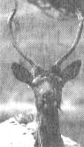 PHIL SCHOFIELD Artist Wendy Morgan walks a mare and day-old colt at the Crane Creek Ranch outside Wilson, Wyoming. |
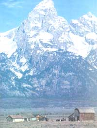 PHIL SCHOFIELD The power of nature here is almost palpable. |
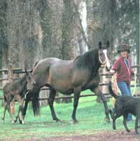 PHIL SCHOFIELD Hungry Jack's Store in Wilson, |
|
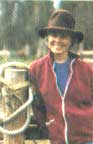 PHIL SCHOFIELD The Great Fountain Geyser, |
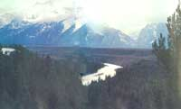 PHIL SCHOFIELD roadside bison |
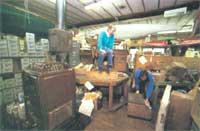 PHIL SCHOFIELD |
|
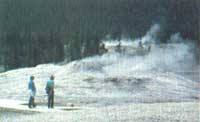 PHIL SCHOFIELD |
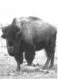 PHIL SCHOFIELD |
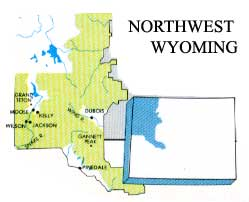 MAP BY DON OSBY |
|
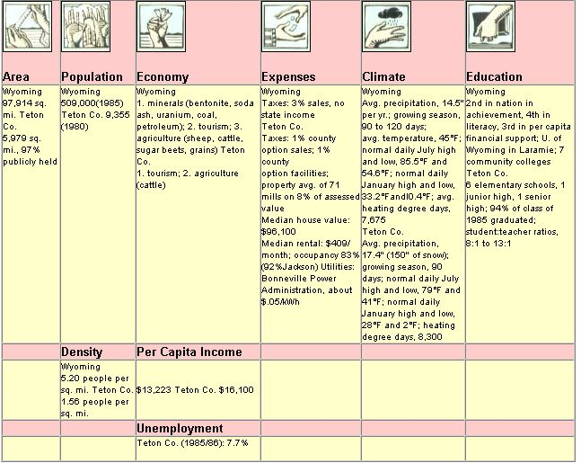 ALISON SEIFFER |
DAVID SWIFT |
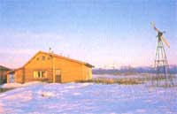 |